倉岳山
| 日付 | 2007年2月4日（日） |
|---|---|
| 山域 | 道志山塊 |
| メンバー | グループ（男4女4） |
| 山行形態 | 日帰り |
| アクセス | 電車、タクシー |
| ルート (Map) | 小篠貯水池→穴路峠→倉岳山→立野峠→梁川駅 |
本日は久々の集団登山。天気は快晴。
9:59 鳥沢駅到着。標高320m。
小篠貯水池までタクシーで移動。
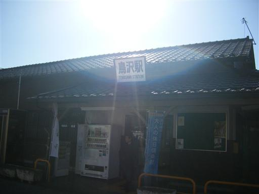
11:44 穴路峠に到着。まだ展望は開けない。
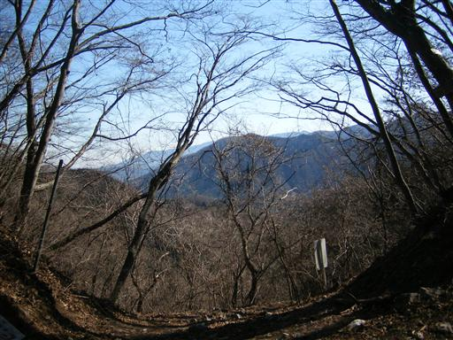
この辺りから傾斜が急になってくる。
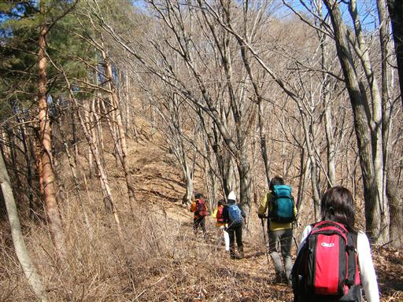
12:06 倉岳山山頂到着。標高990m。
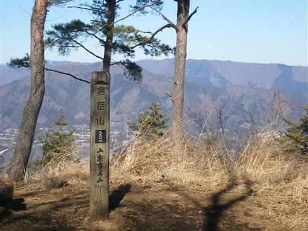
今日は霞むことなく、くっきりと富士山が見える。
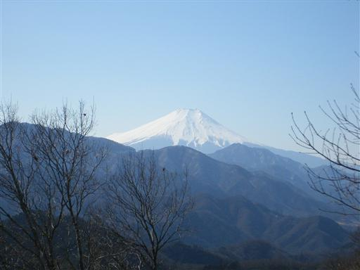
富士山と反対方向の展望も開けている。
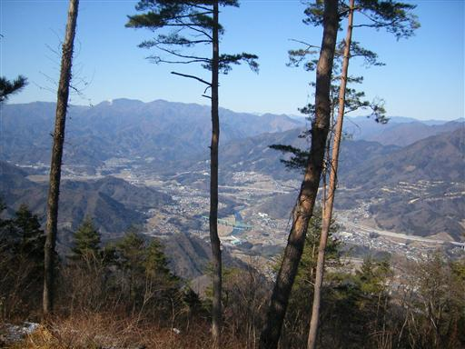
下山開始。遠くまで山並が続く。
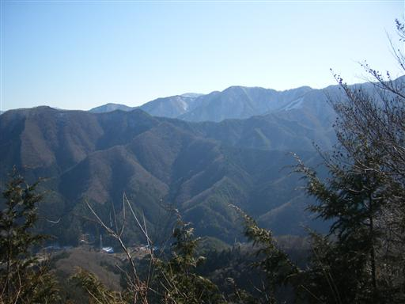
植林地帯を見上げる。
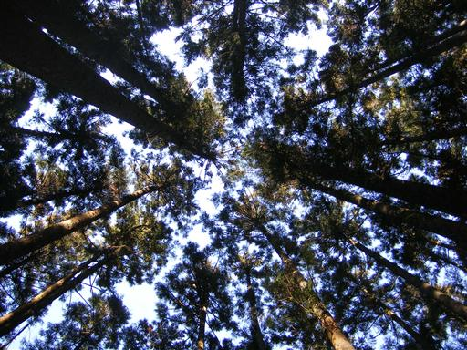
下山。
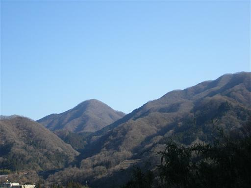
橋から谷をのぞく。相当の高度がある。
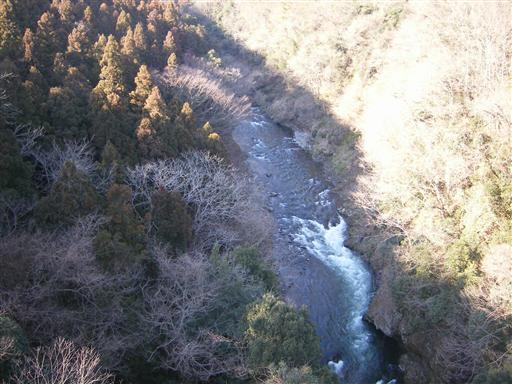
14:30 梁川駅到着。標高275m。
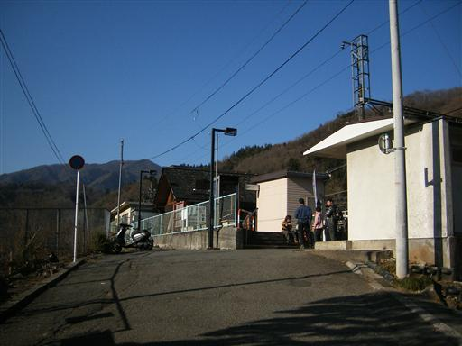
他の山行記録